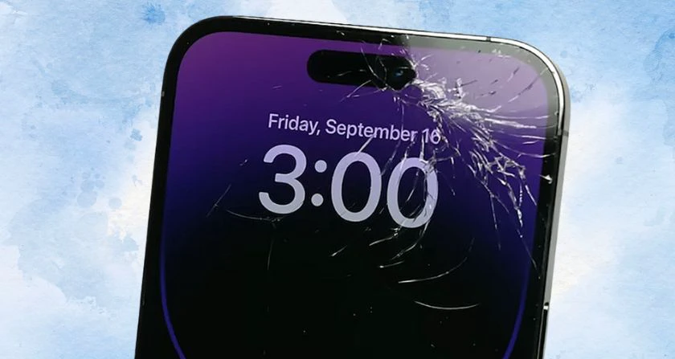
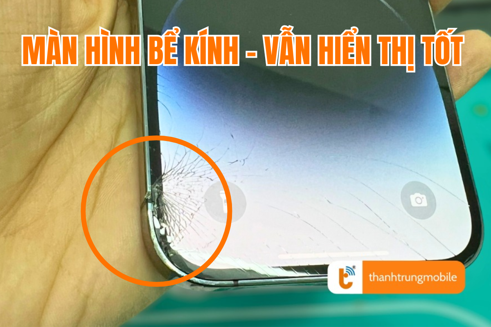
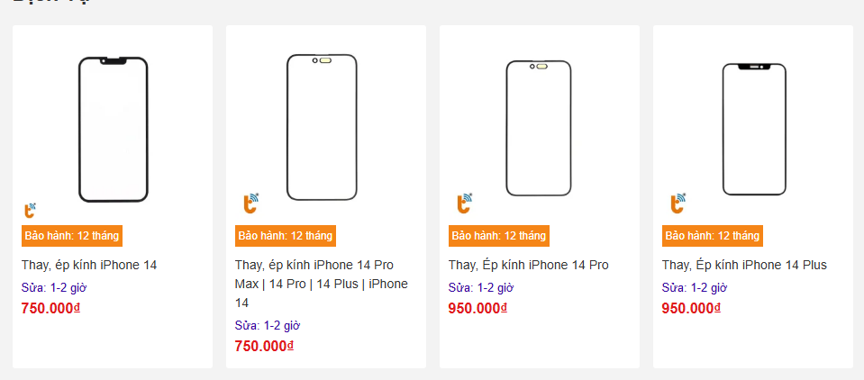
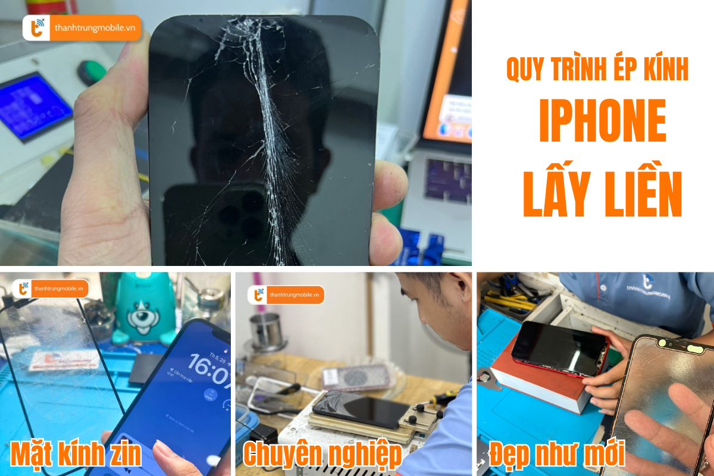

Ép Kính iPhone 14 Series - Dịch Vụ Uy Tín, Chất Lượng Tại Thành Trung Mobile
iPhone 14, 14 Plus, 14 Pro và 14 Pro Max là những chiếc smartphone cực kỳ nổi bật, với thiết kế sang trọng, màn hình sắc nét và những tính năng cực kỳ tiên tiến. Tuy nhiên, trong quá trình sử dụng, mặt kính của những siêu phẩm này không tránh khỏi các vết nứt, trầy xước hay hư hỏng.
Để khôi phục lại vẻ đẹp cũng như hiệu năng của máy, ép kính chính là giải pháp tối ưu. Thành Trung Mobile là địa chỉ đáng tin cậy để bạn sửa chữa và ép kính iPhone 14 Series chất lượng, nhanh chóng và giá cả hợp lý.
Mặt Kính iPhone 14 Series Quan Trọng Như Thế Nào?
Những chiếc iPhone 14, 14 Plus, 14 Pro, 14 Pro Max không chỉ là những chiếc điện thoại thông minh mà còn là biểu tượng của sự sang trọng và đẳng cấp. Mặt kính chính là yếu tố quan trọng tạo nên vẻ đẹp của chiếc iPhone, và cũng là bộ phận bảo vệ màn hình cảm ứng và các linh kiện bên trong. Một khi mặt kính bị vỡ, nứt hay trầy xước, không chỉ làm giảm tính thẩm mỹ mà còn ảnh hưởng đến trải nghiệm người dùng. Vì vậy, ép kính là giải pháp hiệu quả để khôi phục lại vẻ đẹp ban đầu và trải nghiệm mượt mà.
Thành Trung Mobile cam kết sẽ mang lại cho bạn dịch vụ ép kính iPhone 14 Series với mặt kính zin chính hãng, giúp máy trở lại tình trạng như mới. Chúng tôi sử dụng máy móc hiện đại, quy trình ép kính chuẩn, đảm bảo chiếc iPhone của bạn sẽ đẹp, cảm ứng mượt mà và hiển thị sắc nét.
Dấu Hiệu Cần Ép Lại Mặt Kính iPhone 14
Để biết khi nào cần ép lại mặt kính iPhone 14, bạn chỉ cần chú ý đến một số dấu hiệu cơ bản. Nếu mặt kính bị vỡ, nứt, trầy xước, hoặc bị ám màu, bạn nên cân nhắc việc ép kính ngay. Những dấu hiệu này sẽ làm giảm trải nghiệm sử dụng, đặc biệt là khi bạn đang sở hữu những chiếc iPhone cao cấp như iPhone 14 Pro hay 14 Pro Max.
Đặc biệt, nếu bạn thay mặt kính kém chất lượng, máy sẽ không khít với khung máy, làm mất đi tính thẩm mỹ ban đầu và ảnh hưởng đến chất lượng hiển thị. Thành Trung Mobile cung cấp dịch vụ ép kính iPhone 14 Series với mặt kính zin chất lượng, giúp khắc phục các vấn đề này, trả lại cho bạn chiếc iPhone như mới.
Khi Nào Cần Ép Lại Mặt Kính iPhone 14?
Việc ép lại mặt kính iPhone 14 chỉ cần thiết khi màn hình vẫn còn hoạt động tốt, không có sọc hay điểm chết. Bạn cũng cần chắc chắn rằng màn hình không bị ám ố hay có các vết mực đen. Việc ép kính trong những trường hợp này sẽ giúp bạn tiết kiệm chi phí thay màn hình hoàn toàn, đồng thời giữ lại màn hình zin của máy.
Quy trình ép kính tại Thành Trung Mobile diễn ra nhanh chóng, chỉ từ 1-2 giờ, bạn sẽ có thể lấy ngay chiếc iPhone 14 của mình mà không phải lo lắng về thời gian chờ đợi.
Giá Ép Kính iPhone 14 Series
Vậy giá ép kính iPhone 14, 14 Plus, 14 Pro và 14 Pro Max là bao nhiêu? Thành Trung Mobile cung cấp dịch vụ ép kính iPhone với mức giá hợp lý, và chúng tôi luôn cam kết chất lượng đi đôi với giá cả. Bạn chỉ cần liên hệ trực tiếp với chúng tôi để nhận báo giá chi tiết và các ưu đãi hấp dẫn.
Hãy đến với Thành Trung Mobile để nhận dịch vụ ép kính iPhone 14 Series chất lượng với mức giá ưu đãi. Đặc biệt, chúng tôi còn có nhiều chương trình khuyến mãi hấp dẫn cho khách hàng đặt lịch trước!
Ép Kính Có Ảnh Hưởng Đến Màn Hình iPhone 14 Không?
Đây là câu hỏi nhiều người dùng quan tâm trước khi quyết định ép kính cho chiếc iPhone 14 của mình. Mặt kính và màn hình là hai bộ phận riêng biệt. Ép kính đúng kỹ thuật sẽ không ảnh hưởng đến màn hình, dữ liệu hay các chức năng của máy. Thành Trung Mobile sử dụng công nghệ ép kính hiện đại, không làm tổn hại đến màn hình và các bộ phận khác của chiếc iPhone của bạn.
Thời Gian Ép Kính Tại Thành Trung Mobile
Với quy trình ép kính nhanh chóng và hiệu quả, Thành Trung Mobile cam kết sẽ hoàn tất công việc chỉ trong vòng 1-2 giờ. Bạn có thể xem trực tiếp quá trình ép kính của các kỹ thuật viên để yên tâm hơn về chất lượng dịch vụ. Chúng tôi cam kết mang lại sự hài lòng tối đa cho khách hàng.
Thành Trung Mobile – Địa Chỉ Ép Kính Uy Tín Tại TP.HCM
Với nhiều năm kinh nghiệm trong ngành sửa chữa điện thoại, Thành Trung Mobile là địa chỉ ép kính iPhone 14 uy tín tại TP.HCM. Chúng tôi cam kết:
- Sử dụng mặt kính zin, ép kính như mới.
- Kính chất lượng cao, hiển thị sắc nét, cảm ứng mượt mà.
- Đội ngũ kỹ thuật viên giàu kinh nghiệm, thao tác chính xác, cẩn thận.
- Quy trình chuyên nghiệp, bảo hành dài hạn.

Chúng tôi có mặt tại nhiều chi nhánh tại TP.HCM, mang đến cho bạn sự thuận tiện trong việc sửa chữa và ép kính iPhone 14.
Quy Trình Ép Kính Tại Thành Trung Mobile
Quy trình ép kính tại Thành Trung Mobile rất đơn giản và minh bạch:
- Tiếp nhận máy và kiểm tra tình trạng mặt kính.
- Báo giá và thời gian ép kính.
- Ép kính và kiểm tra lại chất lượng tổng thể.
- Bàn giao máy, in phiếu bảo hành, hướng dẫn bảo quản.
Hướng Dẫn Bảo Quản Mặt Kính Sau Khi Ép
Để giữ mặt kính sau khi ép bền lâu, bạn cần lưu ý:
- Dán cường lực và sử dụng ốp lưng bảo vệ.
- Tránh để máy ở nơi có nhiệt độ cao hoặc bị va đập mạnh.
- Không để máy gần các vật nhọn hoặc cứng.
- Khi bỏ vào túi quần, xoay màn hình vào trong để tránh va đập.
Hãy liên hệ ngay với Thành Trung Mobile để nhận báo giá dịch vụ ép kính iPhone 14 Series chất lượng, nhanh chóng và giá rẻ tại TP.HCM. Đặt lịch trước để được giảm giá 10% và hỗ trợ nhanh nhất!